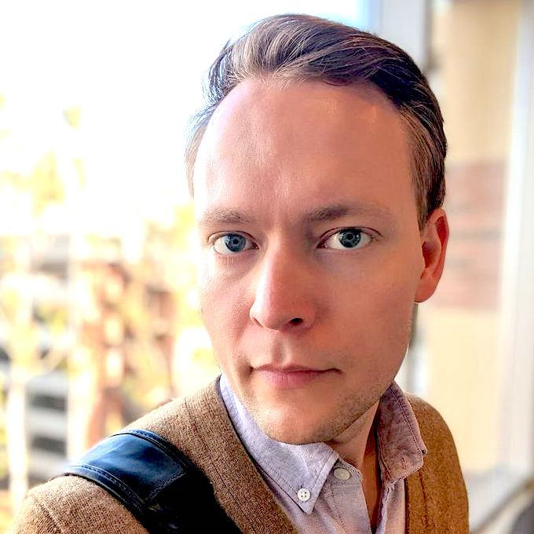
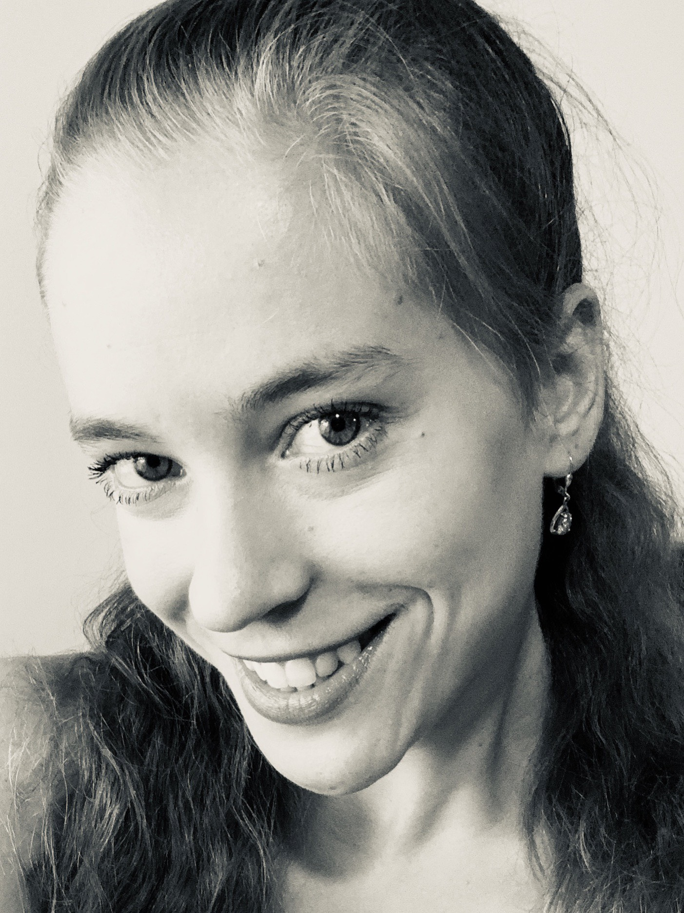

This event has passed. Thank you, all of our panelists and participants, for making this event happen! If you missed out and are applying to PhD programs this year, you can still drop into the event Discord server and sign up for a Google group/mailing list that will guide you through the application process.
Schedule ·
Logistics
Recruiting Faculty · Current Students · Non-Academic Panelists · Acknowledgements
What makes this event different?
This event was designed with the observation that many students do not consider an advanced degree in computing because they believe academia is not for them. This was an issue before the pandemic and will lead to a disasterous shortcoming of computing professionals in the United States, given volitility in US immigration policy. Our objective is to match junior (i.e., new) faculty members whose recruiting efforts have been hampered by the pandemic with students whose career prospects may have been hampered by the pandemic.
Through this event we will discuss PhD training as work: we will discuss pay, benefits, and norms. We advocate that students view the PhD as an apprenticeship and highlight the variety of career paths that the PhD opens up. We emphasize that the priority for students and faculty alike will be finding a healthy working relationship between the two parties. Finally, in recognition of the fact that the PhD application process can be daunting, especially when students face inordinate stress and uncertainty, we aim to smooth the path for them.
Schedule
All times are listed in Eastern Standard Time.
| 09:00-09:15 | Welcome + Introduction to Tooling |
| This will be a pre-recorded message explaining Zoom and Discord - Have everyone log into Discord
- Have everyone log into Zoom to say "hi"
- Community troubleshooting
|
| 09:15-09:40 | Why Graduate School, Why Now? |
| Brittany Johnson & Emma Tosch |
| This session will discuss why graduate school can be a good option, particularly right now. Some major points of discussion: - Graduate school can be a safety net during economic contraction
- Address why stay in academia when there is important work in, e.g., activism that students may be compelled to do right now
|
| 09:40-10:00 | Break |
| Check into affinity group channels, meet some new folks! |
| 10:00-10:25 | Graduate School is a Job |
| Panelists: Strubell ·
Darais · Tansey · Jurgens Moderator: Onaolapo
|
| - Discussion of Pay
- Discussion of TA (teaching assistantships) vs RA (research assistantships) vs fellowships
- Explanation of the PI (principal investigator, a.k.a. your boss!)’s perspective and how understanding this is helpful
|
| 10:30-10:55 | Graduate School is not a Job |
| Panelists: Anastasopoulos
· Day · Derr ·
He Moderator: Kann |
| - Discussion of what the PhD actually is
- Must work in an area where you can receive guidance/mentorship
- How it is more like an apprenticeship
- Developing mastery of a topic, building skills along the way
|
| 11:00-11:20 | Break |
| Give students the chance to connect with faculty |
| 11:20-11:45 | Working toward mastery: technical skills |
| Panelists: Thomason ·
Muller · Passos · Smith Moderator: Stein
|
| Emphasis should be on the idea that these four are skills everyone must have in some capacity to make progress and get a PhD. The farther along you are when you start, the easier some things will be. No one will be excellent at all four, and everyone should work on these skills every day:- Programming/Coding
- Reading papers (and doing so quickly!)
- Math/formalization
- Writing
- Experiment design + human subjects (pivot)
|
| 11:50-12:15 | Working toward mastery: research skills |
| Panelists: Arden · Near · Moran · Ferraro Moderator: Strubell
|
| Emphasis should be on the idea that this is what your advisor is actually teaching you; if you learn basic technical skills from them, that’s a bonus, but their job is to actually teach you about the business of doing research and/or working in academia: - Identifying interesting research questions
- Forming hypotheses
- Designing formalisms and/or experiments to evaluate those questions
- Evaluating your own work
- Navigating related work
- Critiquing others’ work
|
| 12:20-13:40 | Lunch break/power naps |
| 13:40-15:00 | Faculty-student breakout rooms |
| Recruiting Faculty |
| Each faculty member who is recruiting students will host a breakout room. We encourage faculty to provide <2min video summaries of their research, to be advertised ahead of the event |
| 15:05-16:25 | Concurrent non-faculty breakout rooms |
| Three breakout rooms featuring: - Current students talk about about their experiences regarding graduate school.
- Graduated CS students who perhaps did REUs or had some research experience and decided NOT to go to graduate school
- Graduated PhDs who are not in academic positions, to talk about non-faculty paths that the PhD opens up
|
| 16:30-16:40 | Closing remarks |
| - How to follow up
- Keep in touch
- We will send reminder emails that you can opt-out of
|
Top
Logistics
The event will consist primarily of panels and a meet-and-greet with faculty. We will use Discord for chat, and will post Zoom links for our interactive discussions.
Why Discord AND Zoom?
Discord allows voice and video chatting, so why also use Zoom? We would like to have the option of recording panels (with participants' permission), and Zoom allows us to do this easily. We would also like to simulate the experience of being in different "spaces" when there are talks/panels/breakout rooms versus casual chat. This means that if you feel overwhelmed or are not interested in a current panel, you can meet other attendees in Discord and have either totally private chat, or in public channels.
Top
Morning Session Panelists
The morning session will consist of panels where current faculty answer questions about PhD training.
Recruiting Faculty
These are junior faculty (i.e., new folks at their universities!) who are looking to hire students in 2021. Pop into a breakout room during the faculty-student matching session to connect with them as a possible future advisor!
Emma Tosch · Programming Languages (PL), Experimental Design, general intersection of PL/Systems and Data Science/Machine Learning |
Brittany I. Johnson · Software Engineering, Human-Computer Interaction (HCI), Machine Learning |
 Tyler Derr · Social Network Analysis, Data Mining, Machine Learning |
| Joe Near · Privacy, Security, Programming Languages |
 Jeremiah Onaolapo · Cybersecurity, Social Network Security, Understanding malicious activity in online accounts |
 Jesse Thomason · Natural Language Processing for Robotics (RoboNLP), Grounded Language Learning |
|  Katharina Kann · Natural Language Processing, Machine Learning |
Wesley Tansey · Machine Learning, Bayesian methods, Computational biology, Cancer genomics |
Frank Ferraro · Natural Language Processing, Semantics, Semi-supervised & Unsupervised Machine Learning (ML), Grounded language (vision & language) |
Xi He · Privacy, databases |
Owen Arden · Language-based security, PL, security, distributed systems |
Stefan Muller · Broadly: programming languages (PL). Specifically: Applications of PL techniques, type systems, parallelism, resource analysis. |
Kevin Moran · Software Engineering (SE), Machine Learning (ML), mobile systems |
Gregory J. Stein · Intersection of robotics/machine Learning, planning, representation learning, trustworthy agents (e.g., robots) |
David Jurgens · Natural Language Processing, Computational Social Science, Science of Science |
|
 Antonis Anastasopoulos · Natural Language Processing (NLP), Machine Learning, Endangered Languages, Multilinguality |
|
Top
Afternoon Panelists
The afternoon sessions will consist of panelists from a variety of career trajectories, at different points in their careers. They range from those who are currently making the decision of whether or not to pursue a PhD, those who had considered a PhD and decided it wasn't for them, those who decided to pursue industrial work with a PhD, and more!
Current Students
Come chat with current students during one of breakout sessions and hear about their paths to and from research in computing. Have a candid discussion about the ups and downs of graduate school, what to look for in an advisor, and when to walk away.
 | Krystal Maughan is a second year PhD student at the University of Vermont, where she is researching provable fairness, privacy and machine learning. She previously obtained an undergraduate degree in Film, Photography and Visual Arts, an a double minor in Theatre Arts and Art History. Before attending grad school, she worked in R&D for the film industry for several years and completed several software internships in the Bay area, as well a workshop at the Jet Propulsion Laboratory before starting graduate school at UVM. |
 | Annabel Rothschild is a first-year PhD student at Georgia Tech. After dabbling in many dark arts—including programming language syntax design, user-focused security and privacy, and (dis/mis)information—she settled happily into an interdisciplinary graduate program within a traditional CS department and a subsequent lifetime of trying to explain what exactly "Human-Centered Computing" means. Her current research adventures revolve around developing technical tools to assist in data literacy skill building. |
| Mayeline Peña is a Senior Computer Science and Dance major at Smith College who has done research as an undergraduate and is ambivalent about graduate school. In her own words, "Come and share with someone that understands what your biggest fears and hidden questions about what PhD programs are and where to go next. If you don't know what your questions are, perfect! Maybe my worries and queries can help you learn your own." |
| Amee Trivedi is a final year Ph.D. student at the University of Massachusetts Amherst, graduating in Spring 2021. She works in the areas of ubiquitous computing and passive sensing. She is interested in graph based systems, AI in healthcare, ubiquitous computing, mhealth, and data science. She worked in the industry as a kernel programmer for several years before starting graduate school. She loves doing research and aims to work on problems that have a high societal impact. |
| Alicia Boyd is a 4th-year Ph.D. Candidate at DePaul University in Chicago, IL. Her research looks at (1) how the virality of #MeToo harmed the established 'me too' movement by occluding Black women's voices, (2) how various Twitter users highlighted their intersectional position during the viral #MeToo movement by utilizing machine learning techniques that focus on intersectional analysis, and (3) visualizing intersectional analysis by modifying traditional social network analysis. Alicia is a GAANN fellow, GEM fellow, and 2019 recipient of the Grace Hopper Scholar Award. Outside and inside the university, she mentors women and girls of color navigating academia, encouraging health and wellness, and promoting wholeness in their voices. Her educational journey is atypical, which allows her to view and approach situations and tasks by placing people first, inspired by her formal training in the medical field. Alicia has earned both her Masters in Mathematics and Higher Education from University Missouri-Saint Louis. |
Top
Possible Paths
In parallel with our student panelists, there will also be panelists who have had prior research experience in computing, but have chosen to go into industry, and panelists who have earned a PhD, and have chosen to follow a non-academic path. The former can provide a perspective on why graduate school might not be the right path. The latter can provide a perspective on the opportunities that a PhD in computing can open, that are not within academia.
What if I decide a PhD isn't for me?
Come chat with folks who had some computing research experience, either as undergraduates or Master's students, and decided that the PhD wasn't for them, for now.
| Molly McMahon is a 2017 graduate of UMass Amherst, where she did her B.S. and M.S. in Computer Science. She has since been working in Boston as a software engineer at Viasat, most recently on various NLP applications for the automated customer care team. While at UMass, she participated in various REUs and independent studies in natural language processing, programming languages and systems, and causal analysis, as well as internships in various industries. |
| Kevin Lubick is a Senior Software Engineer at Google. He works on the Chrome team, specifically on the Skia graphics library. While in graduate school, Kevin researched tools to help people build software effectively. That passion for building software that developers find useful followed him into the world of industry - the projects he oversees as tech lead help developers go fast and avoid breaking things. In his spare time, he teaches as an Adjunct Instructor at NC Central University. |
| Nishith Khandwala is a co-founder of Bunkerhill Health, a clinical trials network and distribution platform for AI algorithms for medical imaging. He holds a bachelor's and master's degree in Computer Science from Stanford University, where he worked on AI research projects involving weak supervision and healthcare. Nishith has also been a teaching assistant for graduate-level AI courses at Stanford. |
| Meagan Day is a Director of Engineering at athenahealth. She holds B.S. and M.S. degrees in Computer Science as well as a B.S. in Mathematics from UMass Amherst, where she discovered her passion for computer science and software engineering. After completing her M.S. she joined athenahealth as a software developer, where today she thinks about interoperability in healthcare IT, distributed computing and bulk data movement, building effective and engaged Agile teams, equitable hiring practices, and diversity and inclusion in software engineering. |
Top
What can a PhD do other than be a professor?
 | Rahul Pandita is a senior research scientist at Phase Change Software.
His primary research interests are in data science and automated software engineering. He specifically works in the area of program comprehension targeted towards improving developer/tester/end-user productivity.
Previously, Rahul worked as a postdoctoral researcher at Department of Computer Science NCSU working with Dr. Laurie Williams and Dr. Munindar Singh. He received his PhD. from NCSU in Computer Science. |
|
Alex Passos is a Senior Staff Software Engineer in Google Research. He is working on natural language problems, around model controllability, grounding, retrieval-based models, etc. Before he was the area tech lead responsible for TensorFlow, and even before that he went to graduate school and got a PhD advised by Andrew McCallum at UMass. |
| David Darais is a Principal Scientist at Galois, Inc., where he builds programming languages and analysis tools which help programmers build reliable software. In particular, these languages and tools are designed for security-sensitive settings, and when applied, result in systems which are immune to large classes of defects. David received his BS from the University of Utah, MS from Harvard University, Ph.D. from the University of Maryland, and was previously an Assistant Professor at the University of Vermont before joining Galois. |
| Jackie Lee is the co-founder and former CTO of Silo. She developed the core products, built the engineering team, and helped take the company to series A. Currently, she is a science advisor for a mental health startup — Neolth. Before founding Silo, she was the lead data scientist at Virta, and a ML engineer at Kite. She joined both companies when there were fewer than 30 and 10 employees respectively. She received her Ph.D. from MIT, and her research area was in the intersection of natural language processing, speech recognition, and cognitive science. |
Top
Acknowledgements
This event was primary organized by Emma Tosch (University of Vermont) and Brittany Johnson Matthews (George Mason University), with generous support from CodePath. We also owe thanks to Joe Near and Emma Strubell for early feedback and helping to recruit other faculty. Thanks to Sara Kingsley for feedback on the current CS PhD student salary survey, and thanks to John Foley, for one or two thankless tasks.